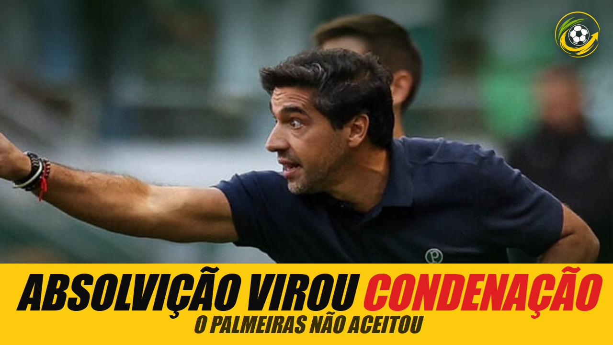
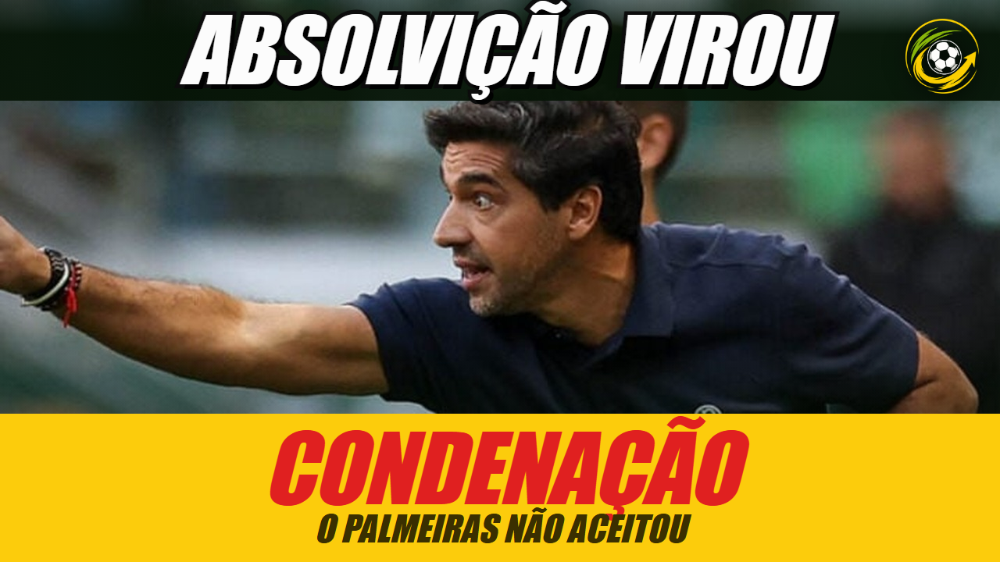
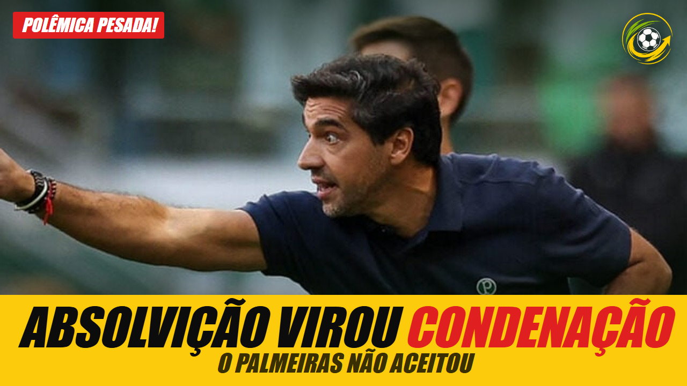
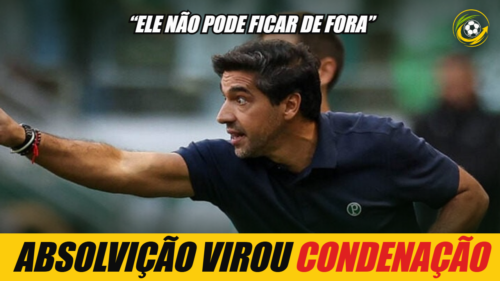
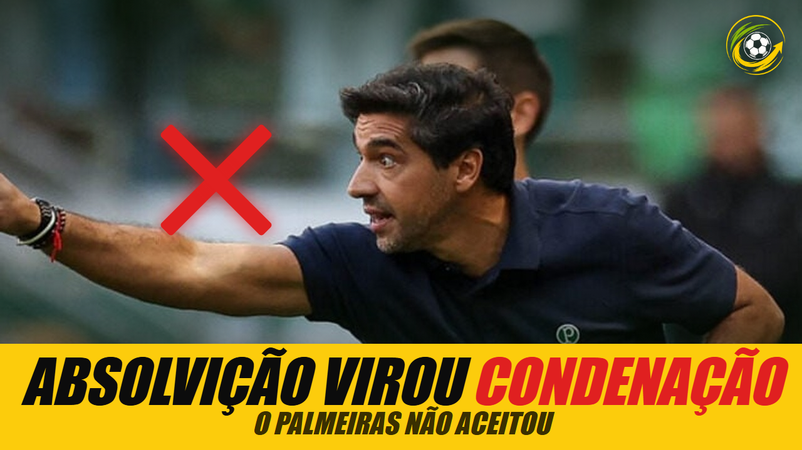
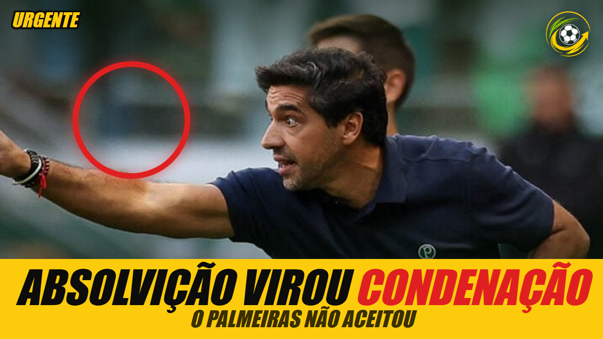
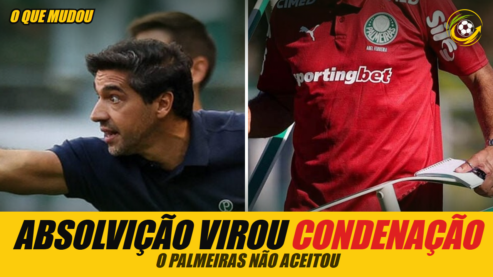
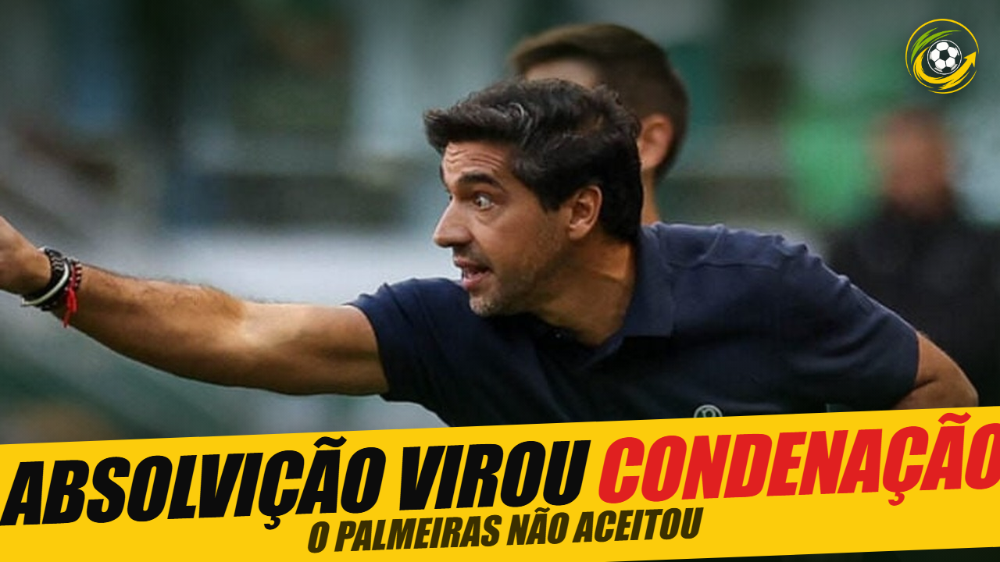
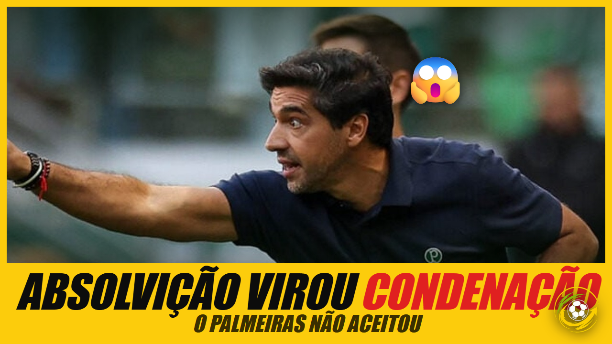
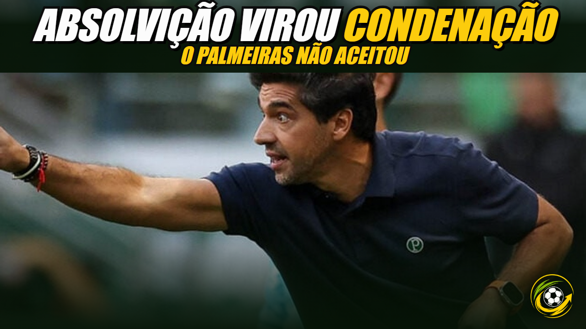

Estilos de thumb
A mesma copy nos dez desenhos. Comparar estilo com copy diferente
não compara estilo — compara copy. Cada um aparece grande e a 168 px,
que é o tamanho do feed.
Título: AGORA! Abel fora, e o Palmeiras não aceita o veredito
Thumb: ABSOLVIÇÃO VIROU CONDENAÇÃO · O PALMEIRAS NÃO ACEITOU
E1
Faixa amarela no rodapé

AGORA! Abel fora, e o Palmeiras não aceita o…
Bora de Bola · 12 mil visualizações
O padrão mais usado do nicho. Foto no quadro inteiro, faixa amarela sólida embaixo com o texto em preto. Lê de longe e identifica o canal.
E2
Dupla faixa — topo e rodapé

AGORA! Abel fora, e o Palmeiras não aceita o…
Bora de Bola · 12 mil visualizações
A frase se parte em duas: a tensão em cima, a resolução embaixo. É o desenho do BTB Sports, e dá duas chances de o olho pegar a promessa.
E3
Etiqueta de canto + faixa

AGORA! Abel fora, e o Palmeiras não aceita o…
Bora de Bola · 12 mil visualizações
A etiqueta vermelha dá o gênero da notícia antes de qualquer palavra. É a leitura mais rápida de todas — a cor chega antes do texto.
E4
Citação entre aspas

AGORA! Abel fora, e o Palmeiras não aceita o…
Bora de Bola · 12 mil visualizações
As aspas fazem o espectador supor que há uma fala. Cuidado de uso: só entra frase que EXISTE na fonte, senão vira B3 e o motor barra.
E5
Marcação — X sobre a pessoa

AGORA! Abel fora, e o Palmeiras não aceita o…
Bora de Bola · 12 mil visualizações
O X marca a negação: fora, cortado, suspenso. Direto e brutal, e por isso mesmo gasta rápido se usado todo dia.
E6
Marcação — círculo e seta

AGORA! Abel fora, e o Palmeiras não aceita o…
Bora de Bola · 12 mil visualizações
O círculo dirige o olho para o rosto e a seta cria movimento. Menos agressivo que o X, serve para pauta que não é de negação.
E7
Dois painéis

AGORA! Abel fora, e o Palmeiras não aceita o…
Bora de Bola · 12 mil visualizações
Duas fotos com divisória branca. É como o nicho mostra confronto — e aqui mostra o antes e o depois do mesmo personagem.
E8
Faixa diagonal

AGORA! Abel fora, e o Palmeiras não aceita o…
Bora de Bola · 12 mil visualizações
A mesma faixa, inclinada. Quebra a horizontalidade da fileira de sugeridos, onde toda thumb concorrente é reta.
E9
Moldura da marca + emoji

AGORA! Abel fora, e o Palmeiras não aceita o…
Bora de Bola · 12 mil visualizações
A moldura amarela é a assinatura do canal: mesmo cortada no feed, o olho reconhece. O emoji é o que o nicho usa para dizer o tom sem gastar palavra.
E10
Texto gigante no topo inteiro

AGORA! Abel fora, e o Palmeiras não aceita o…
Bora de Bola · 12 mil visualizações
Sem faixa: o texto ocupa o topo inteiro com contorno grosso sobre a foto. É o que mais aproveita a área, e o que mais depende de a foto ter céu.